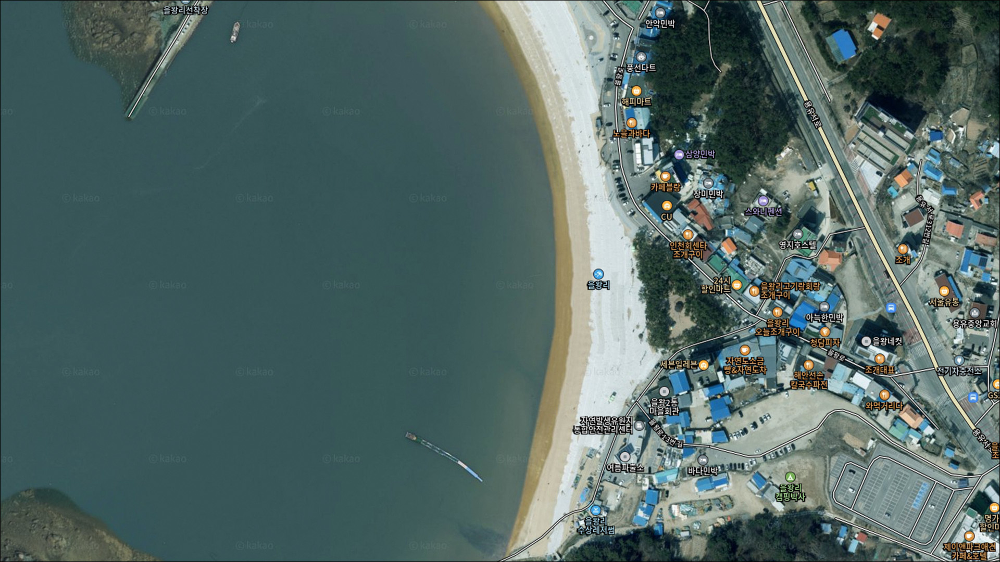
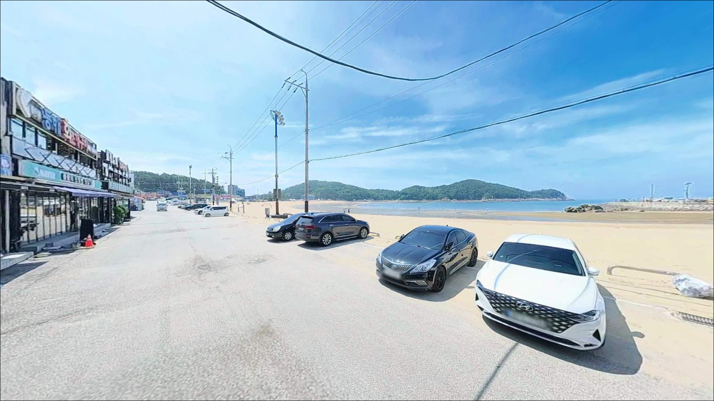
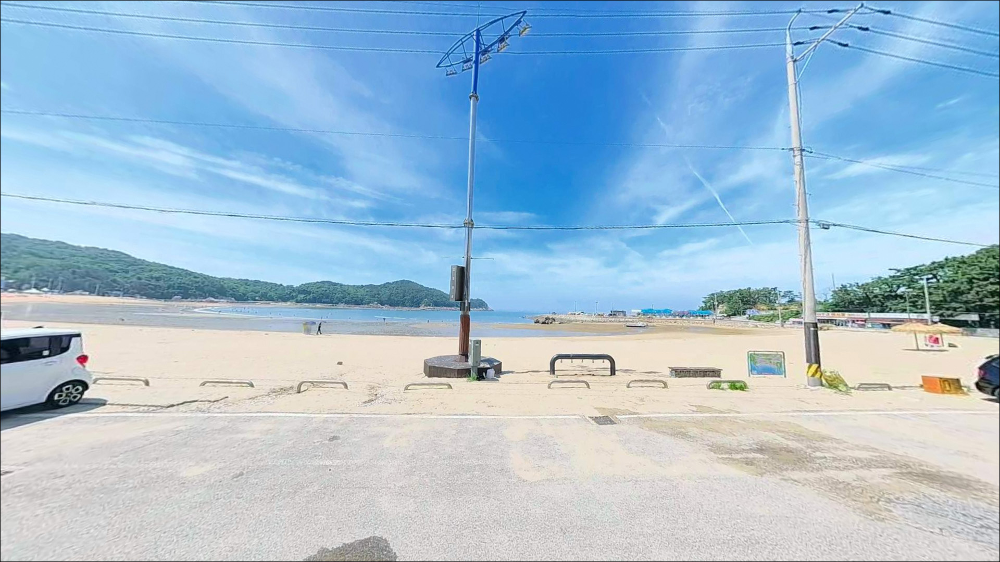
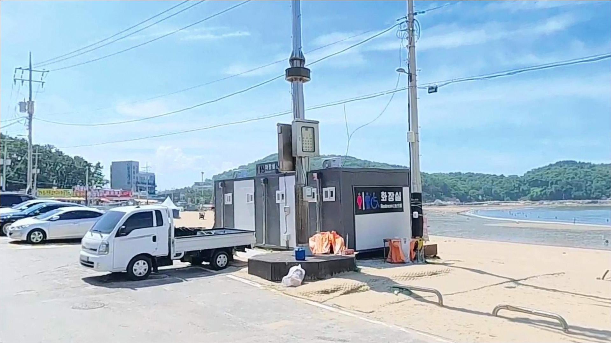
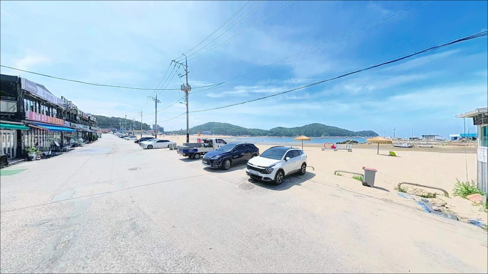
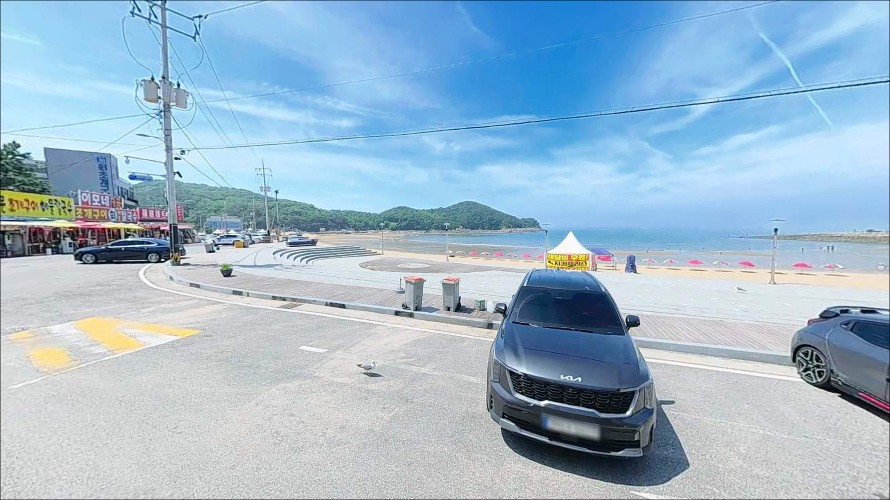
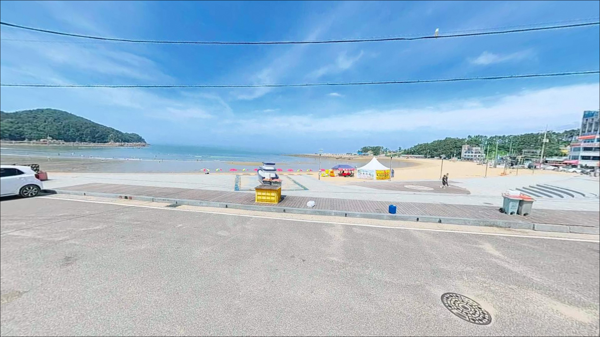
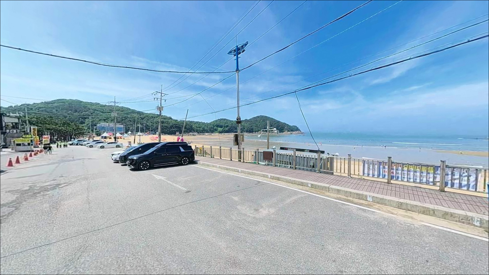
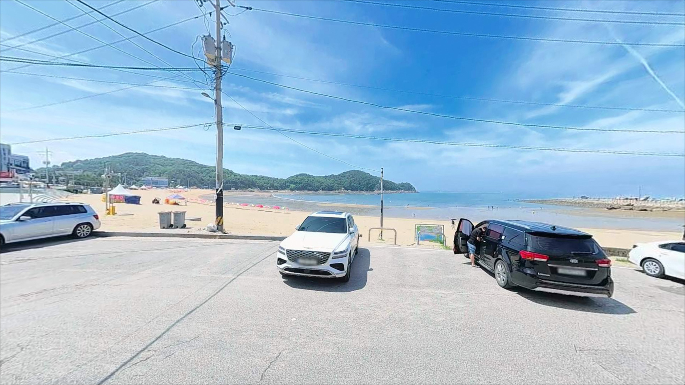

을왕리해수욕장, 영종도 인천 중구 바다의 여운이 오래 남는 차박, 낚시 감성 포인트


포인트 안내
을왕리해수욕장
인천 중구 을왕동 717-12
을왕리해수욕장에서 낚시 구간을 잘못 잡으면
피서객 사이에서 낚싯대 하나 펼 자리가 없습니다.
백사장 중앙은 낚시보다 피서에 가까운 공간이며,
실질적인 낚시는
해변 양쪽 끝 암반과 갯바위 구간에서 시작됩니다.
구간을 먼저 정하고 물때를 맞추지 않으면
이동만 하다 철수하는 상황이 됩니다.
영종도 서쪽에 자리한 을왕리는
수도권 낚시인에게 접근성이 좋은 서해 포인트입니다.
인천대교를 건너 해안 도로까지 이어지는 포장도로 덕분에
차량 진입 자체에는 어려움이 없고,
갯바위·선착장·백사장이 복합된 구조라
낚시 방식에 따라 공략 구간이 달라지는 형태입니다.
이 글은 을왕리해수욕장의
구간별 낚시 여건, 물때 판단 기준,
차박 환경에 집중합니다.
조황 단정이나 특정 어종 보장은
이 글의 범위에 포함되지 않습니다.

1. 포인트 위치 및 진입 동선 분석
인천대교 또는 공항고속도로를 거쳐
영종도로 진입한 뒤 해안 방향으로 이동하면
을왕리해수욕장까지 포장도로가 연결됩니다.
해변 앞으로 상가와 숙박시설이 늘어선
해안도로가 형성되어 있어
일반 승용차부터 SUV, 캠핑카까지
진입 자체는 무난한 편입니다.
공영주차장이 해수욕장 인근에 위치해 있으며
유료로 운영됩니다.
공영주차장 옆 공터를 활용한 임시 주차 구간도
운영 시기에 따라 있는 편이며,
해변 주변 사설 주차장과 상가 주차장도 있으나
공영주차장을 기본으로 이용하는 편이 분쟁 예방에 안전합니다.
요금 기준은 방문 시점에 달라질 수 있으므로
현장 안내판을 확인하는 것이 좋습니다.
갯바위 포인트는 주차 후 도보로 이동하는 방식이 일반적이며,
도보 이동에 10~15분 내외가 소요될 수 있습니다.
장비가 많은 원투낚시 세팅이라면
이동 거리와 짐 분량을 미리 계산해두는 것이 효율적입니다.
성수기에는 이른 아침 도착이
주차와 낚시 자리 확보 양쪽에서 유리합니다.

2. 차박 환경 평가 및 야간 체류 여건
을왕리해수욕장은 관광지 특성상
조용한 야영형 차박 환경을 기대하기 어렵습니다.
해변 주변에 펜션·식당·카페가 밀집해 있어
밤늦게까지 조명과 소음이 이어지는 편이며,
성수기 피크 시즌에는 차량 통행과 사람 활동이
자정 이후까지도 이어질 가능성이 있습니다.
낚시 후 짧게 머무르는 방식은
공영주차장 기준으로 가능합니다.
다만 취사나 텐트 설치는
현장 안내판과 구역 기준을 먼저 확인해야 하며,
해수욕장 구역 내 숙박 야영은
운영 방식에 따라 제한이 적용되는 경우가 있습니다.
차박을 메인으로 계획하는 경우라면
을왕리보다 조용한 분위기의 인근 포인트를
함께 검토하는 편이 현실적입니다.
을왕리는 낚시 베이스캠프 기점으로
활용하고, 실제 야간 휴식은
한산한 인근 포인트와 연계하는 동선이 맞는 편입니다.


3. 주변 편의시설 및 인프라 현황
공중화장실, 탈의장, 샤워장, 급수대 등
기본 편의시설이 해수욕장 내에 갖춰져 있습니다.
주변에는 식당, 횟집, 카페가 다수 분포해 있어
음식과 물 보충에 어려움은 없는 편입니다.
수도권 출발 기준으로는 낚시 소품과 채비를
출발 전 미리 준비하는 것이 현장에서 편리합니다.
영종도는 인천국제공항과 인접한 지역으로
전체적인 생활 인프라 수준이 갖춰져 있습니다.
만약 현장에서 채비가 부족하다면
영종도 내 낚시용품점 방향으로 이동하는 것이
가장 빠른 보충 방법입니다.
출발 전에 위치를 미리 확인해두면
현장 대응에서 여유가 생깁니다.

4. 방문 전 반드시 챙겨야 할 준비사항
서해는 조차가 크기 때문에
을왕리에서는 물때 확인이 출조 준비의 첫 번째 기준입니다.
간조 시 백사장이 약 200m까지 드러나는 구조로,
물때에 따라 갯바위 접근 범위와
원투 유효 구간이 달라집니다.
바다타임에서 당일 물때를 확인하고
만조 전후와 간조 전후를 구분해 계획을 세우는 것이
기본 전략입니다.
갯바위 진입 시에는 구명조끼 착용이 필수이며
미끄럼 방지 신발을 갖춰야 합니다.
만조 시 일부 갯바위 구간이 고립될 수 있으므로
물이 들어오는 시간을 파악해두는 편이 안전합니다.
야간 입장이라면 헤드랜턴과 예비 조명을
반드시 챙겨야 합니다.
성수기 낮 시간대에는 피서객 구간과
낚시 자리가 겹치는 상황이 발생합니다.
이 포인트를 낚시 목적으로 방문한다면
이른 아침 도착이나 비수기 선택이
현실적인 접근입니다.
최신 조황은 출조 전에 검색으로 확인해
기대 어종과 타이밍을 맞춰두는 것이 좋습니다.

5. 낚시하기 전에 확인해야 할 을왕리 지형 조건
을왕리해수욕장은 반원형 만 형태로
백사장 길이는 약 700m 수준입니다.
중앙부는 완만하게 수심이 깊어지는 구조로
평균 수심이 얕은 편이며,
낚시 포인트로서의 실질적인 가치는
해변 양쪽 끝 암반과 갯바위 구간에 집중됩니다.
해수욕장 남쪽으로는 선착장 방향으로
갯바위 지형이 이어지고,
북쪽으로는 왕산해수욕장 방면 갯바위 구간이
썰물 때 드러나는 형태입니다.
두 구간 모두 수중 여밭이 형성되어 있어
어류 서식 여건은 갖춰진 편이며,
조류는 들물과 날물 흐름에 따라
변화가 생기는 서해 특성을 그대로 반영합니다.
원투낚시는 만조 전후 백사장 끝단에서
외해 방향으로 투척하는 자리가 유효합니다.
암반과 모래 경계선 구간을 노리면
광어, 우럭, 보리멸 계열의 어종이 기대되는
지형 조건이 갖춰져 있습니다.
다만 백사장 중앙부는 수심이 얕고 바닥이 평탄해
원투의 효율이 떨어지는 편입니다.
을왕리해수욕장 백사장 중앙은
낚시 포인트보다 피서 구역에 가까우며,
실질적인 조과는 양쪽 끝 암반 구간에서
기대하는 것이 이 포인트의 기본 판단 기준입니다.
최신 조황은 가기 전에 꼭 검색해 보시기 바랍니다.

6. 포인트에 어울리는 낚시 스타일
을왕리해수욕장에 잘 맞는 낚시 스타일은
크게 세 가지로 나뉩니다.
첫 번째는 갯바위 워킹 에깅입니다.
9~10월 가을 시즌에는 갯바위 주변에서
주꾸미와 갑오징어를 노리는 워킹 패턴이
지형 조건과 잘 맞습니다.
들물이 들어오는 타이밍에 암반 경계선을 따라
천천히 이동하면서 에기를 흘리는 방식이
이 포인트 구조에 어울리는 접근입니다.
두 번째는 원투낚시입니다.
백사장 끝단에서 만조 전후 타이밍에
외해 방향으로 원투를 시도하면
바닥 어종을 기대해볼 수 있습니다.
여름에서 가을 시즌 보리멸을 노리는 서프 원투가
이 해변 구조에 맞는 방식이며,
성수기 낮 시간대를 피해
이른 아침 또는 비수기 출조가 현실적입니다.
세 번째는 루어낚시입니다.
갯바위 주변 암반 구간에서
소형 루어로 우럭이나 노래미를 노리는 방식이
가능한 지형입니다.
야간에 갯바위 경계선을 워킹하는 루어는
낮 시간대보다 반응이 살아나는 경우가 있습니다.
다만 야간 진입 시에는
갯바위 안전 수칙을 반드시 지켜야 합니다.
서해 특성상 조차가 크기 때문에
간조 전후 2시간이 을왕리 갯바위 원투 포인트에서
유효 타이밍을 판단하는 기본 기준입니다.

7. 대안 포인트와 플랜 B 동선
을왕리해수욕장이 성수기 혼잡이나
물때 여건으로 여의치 않을 때
가장 먼저 이동할 대안은
왕산항 방파제입니다.
을왕리 바로 옆에 위치해 있으며,
방파제 구조라 갯바위보다 발판이 안정적이고
원투와 루어 모두 운용 가능한 여건입니다.
선녀바위 해변도 1km 이내에 있습니다.
암반 지형이 발달해 있어
루어 워킹이나 갯바위 탐색 낚시에 어울리는 여건이며,
을왕리 대비 인파가 덜한 편입니다.
같은 코스에서 두 곳을 묶어 이동하는 동선이
영종도 서쪽 라인 낚시 동선으로 효율적입니다.
영종도 내 다른 포인트로는
잠진도 선착장과 예단포방파제가 있습니다.
잠진도 선착장은 망둥어 포인트로 알려진 곳이고,
예단포방파제는 원투와 루어가 가능한 방파제 구조입니다.
출조 전 "영종도 방파제 낚시"로 검색해
당일 여건을 확인하고
이동 동선을 유연하게 잡는 편이 좋습니다.

구간 선택이 을왕리 낚시의
전부를 결정합니다
에깅 워킹이나 서프 원투를 즐기는 낚시인에게
을왕리해수욕장은 자리 선택만 잘하면
수도권에서 가장 빠르게 바다 낚시를 시작할 수 있는
포인트입니다.
갯바위 구간과 백사장 끝단 원투 포인트는
계절에 따라 다양한 어종을 기대할 수 있는
지형 조건을 갖추고 있습니다.
반면 성수기 낮 시간대에 낚시 목적만으로 방문한다면
피서객과의 공간 충돌 가능성을
먼저 계산해야 합니다.
이른 아침 도착이나 비수기 선택이
낚시 환경 면에서 유리하며,
갯바위 진입 전에는 물때와 만조 예정 시간을
반드시 파악해두는 것이 기본입니다.
차박은 조용한 야영 목적보다
낚시 후 짧게 머무는 방식으로 접근하는 것이
현실에 맞습니다.
왕산항이나 선녀바위와 묶어
을왕리를 기점 삼아 동선을 잡으면
낚시와 차박을 모두 챙기는
영종도 서해 당일 출조가 됩니다.